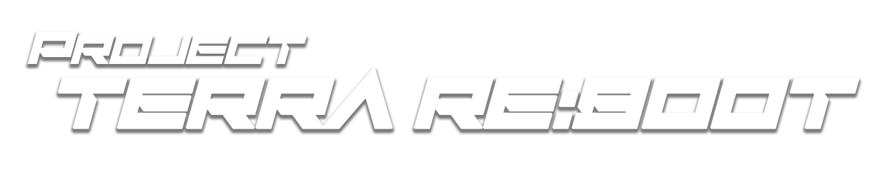

우리는 너희보다 먼저 고갈을 경험했다.
우리가 이 지구를 소생시켜 보이겠다.
2099년, 미확인 거대 구조물 ‘아크(Ark)’가 지구 대기권에 진입하며 전 세계에 송출된 메시지.
자신들을 이레이안(Iraian)이라 칭한 그들은 지구를 침공한 것이 아니라, ‘정화’하러 온 것이라 선언한다.
그들이 뿌린 미지의 입자, ‘테라 포밍 더스트(Terra-Dust)’는 콘크리트 도시를 순식간에 기괴한 원시림으로 뒤덮었고,
지구상의 동식물을 흉폭한 마수로 변이시켰다.
인간에게는 맹독인 이 환경 속에서, 인류의 90%는 멸절된다.
한편, ‘더스트’에 노출되고도 살아남아 오히려 초월적인 힘에 눈을 뜬 소수의 인간들이 있었으니…
그들을 ‘배리어 코어’라고 부른다.
그리고 지금─ ‘지구를 고치려는 자’들로부터 인류의 터전을 지키기 위한, 처절한 수복전이 시작된다.